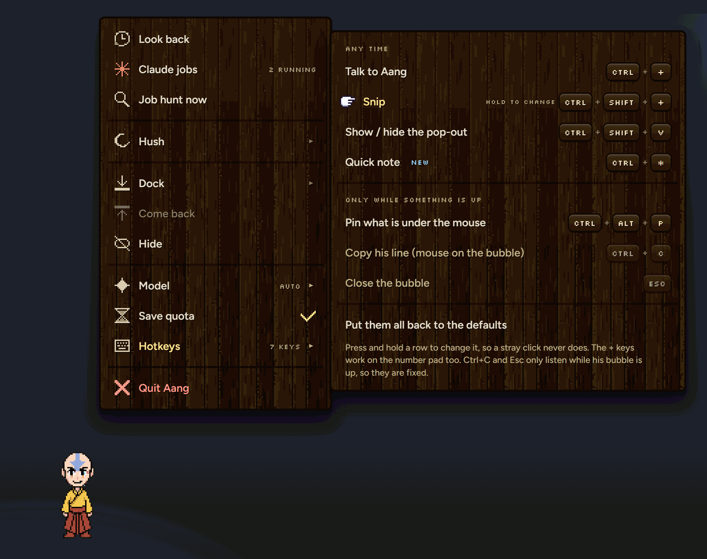
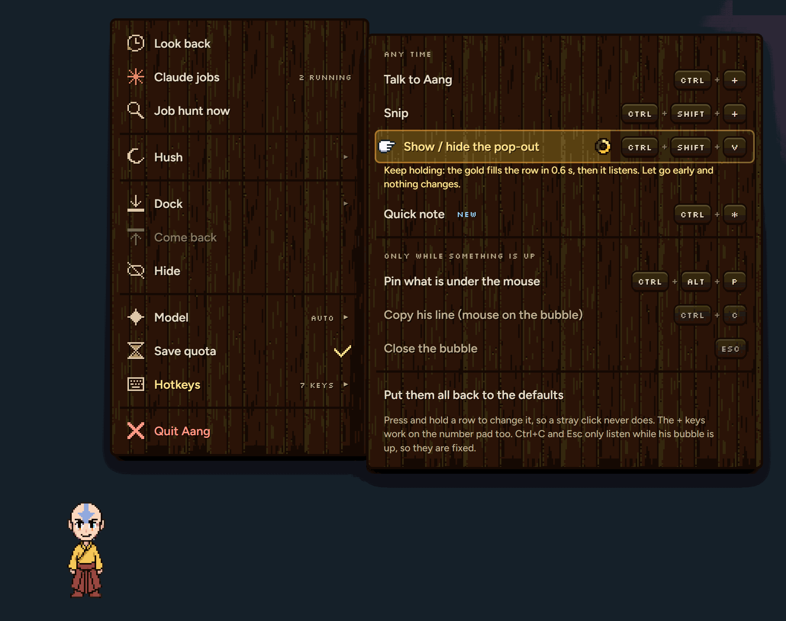
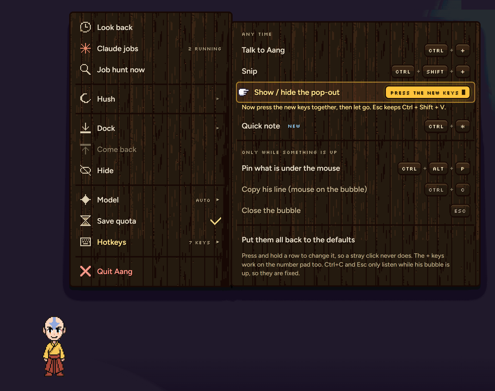
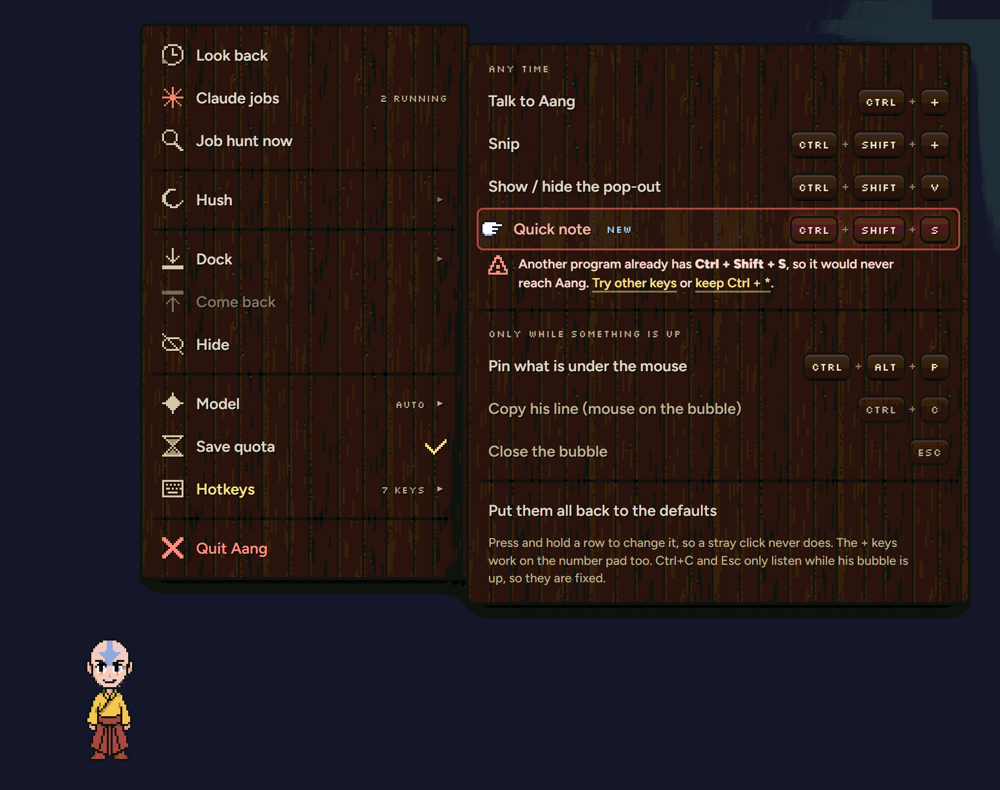

1RIGHT-CLICKED, HOTKEYS OPEN, POINTING AT SNIP · SHOWN 2×

v2 · 22 Oct, after your note: changing a key is now press and HOLD, never a plain click
Right-click Aang, point at Hotkeys: every key he listens for, in one list. Press and hold a row to change it, so a stray click never does.
WHAT TO PICK Yes to hold-to-change (about 0.6 s, a gold fill and a ring), or say shorter / longer, or tell me what to move, rename or drop.
Same wood menu you picked on sheet 56. Pointing at a row says "hold to change". Ctrl+C and Esc are greyed: they only work while his bubble is up.

Press and keep holding: a gold fill sweeps across the row and the little ring fills. It takes about 0.6 s. Let go early and nothing changes.

The fill reaches the end: the row now waits. Press the new keys together and let go. Esc keeps the old ones.

If another program already holds them, the row goes red and says so, instead of quietly never working.
